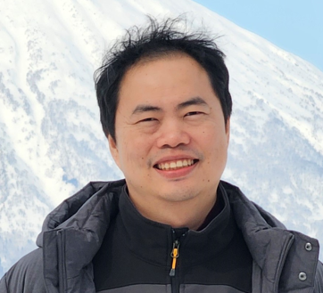

Eakkaphob B

Summary
Working on new technology and people managements. Lead cross-functional development team for factory integration and implementation. Perform data analysis /machine learning (R and Python) to address complex issue and improve equipment performance for maximizing business' benefit (e.g., Yield, UPH, OEE, and Quality). Experience (>10 years) in design and develop software for automated equipment with high precision system for production use. Skills include C++, C#.net, OOP, machine vision, motion control, process design, etc.
Education
- Master of Science - MS, Computer and Engineering Management - Assumption University (2006-2008)
- Bachelor of Engineering - BE, Computer Engineering - Assumption University (2002-2006)
Work experience
-
Seagate Technology Thailand (2006-Present)
-
Sr. Engineering Manager (2020-Present)
- Project and resource managment to develop maturity of new technology
- Stretegic planning and analysis
- Machine data analysis for breakthrough improvement
Staff Engineering (2016-2020)
- Cross-functional project management
- Lead engineering team to transfer and implement new technology for factory
Sr. Software Engineering Team Lead (2012-2016)
- Develop, improve and maintain software framework for automation
- Develop new automation software for new equipment design
- Plan, manage, and coach software team to support cusotmer requirements
Software Automation Engineering (2006-2012)
- Develop automation software to improve and meet factory metric (e.g., UPH, yield, OEE, etc.)
- Develop sofware library for vision, motion, IOs, etc. to support automation hardware
Skill
- Automation: robotic, Vision, Motion
- Programming: C; C++; C#.net; SQL; R; Python; PLC.
- Development: Software Development Life Cycle (SDLC), Design Patterns, Object-Oriented Programming (OOP), 6-sigma, Statistic, Data analysis
Award and Cerifications
- Thailand Kaizen Gold Award 2017: Project ALULM
- DST-CONF 2011: Paper in “Implementing Digital Filter Technique to Eliminate Noise on Swage Automation” topic